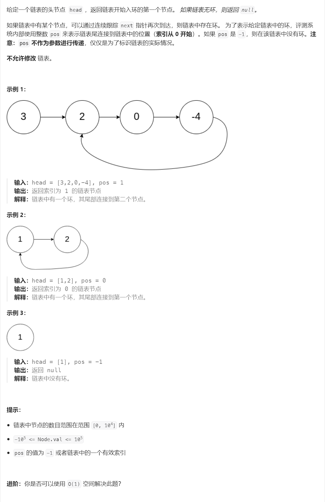
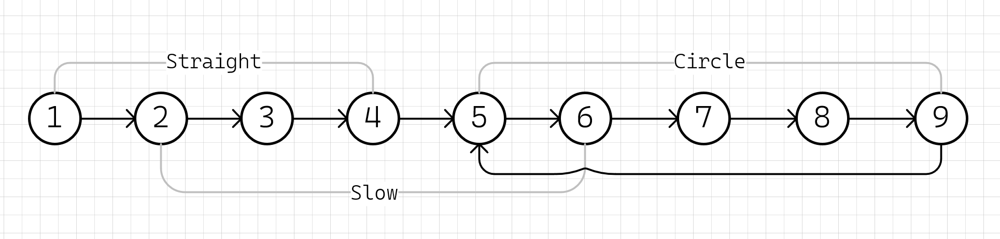

142. 环形链表 II ⭐⭐#

题解一：哈希表#
用哈希表记录每个已遍历的节点，一旦遇到之前记录过节点，即找到环的入口
ListNode* detectCycle(ListNode* head) {
unordered_set<ListNode*> visit;
while (head) {
if (visit.count(head)) {
return head;
}
visit.insert(head);
head = head->next;
}
return nullptr;
}
题解二：快慢指针#

假设表头到入口直线距离为\( straight_{[1..4]} \)个节点（不包含入口），环长为\(circle_{[5..9]}\)，总长为\(straight + circle \)
慢指针\(slow\)每次走一步，快指针\(fast\)每次走两步
快慢指针第一次相遇#
快慢指针相遇时（假设有环），快指针比慢指针多走两倍路程：\(fast = 2 \times slow\)
快慢指针相遇时，快指针比慢指针多走了\(n\)圈：\(fast = slow + n_{[0..\infty]} \times circle\)
根据前面的方程得出：\(slow=n \times circle\)
快慢指针第二次相遇#
任意指针从起始位置\(①\)走到入口需要步数：\(straight + n_{[0..\infty]} \times circle\)
慢指针\(slow\)已经走了\(n \times circle\)，继续往前走\(straight\)步一定可以达到入口处(题解关键点)
第一次相遇后，将\(fast\)指针重置到起始位置\(①\)，并且将其速度也重置为\(1\)
\(slow\)和\(fast\)指针继续向前走直到再次相遇，这次相遇走的步数刚好为\(straight\)，即走到了环的入口处\(⑤\)
总结#
利用快慢指针追击，直至第一次在环中相遇，如果提前遇到空指针则表示无环
第一次相遇后重置快指针速度并放到起始位置，重新追击直至第二次相遇
第二次相遇点即为环的入口
ListNode* detectCycle(ListNode* head) {
ListNode *fast = head, *slow = head;
while(fast && fast->next) {
fast = fast->next->next;
slow = slow->next;
// 第一次相遇
if (fast == slow) {
fast = head;
// 第二次相遇
while (fast != slow) {
fast = fast->next;
slow = slow->next;
}
return fast;
}
}
return nullptr;
}
题外：为什么是2倍速#
首先快指针要追上慢指针肯定是在环上
慢指针第一次上环之后，快指针与慢指针的距离最多为\(circle-1\)
快指针只比慢指针快一步，所以每个回合之后快指针和慢指针的距离都只会缩短\(1\)
所以直到下次相遇前，快指针都不会错过慢指针
其它速问题#
我感觉3倍速/4倍速都行，都能追上并相遇，只是可能会错过并多绕几圈，而且需要多写几层next会比较麻烦，关键是还需要证明一定会追上并相遇
慢指针方程：\( y1 = x \bmod circle \)
快指针方程：\( y2 = x \times step \bmod circle \)
需要证明，存在\(\text{x} \in \mathbb{Z}^+\)，对于任意的\(\text{step} \in \mathbb{Z}^+\)和\(\text{circle} \in \mathbb{Z}^+\)，\(y1=y2\)，即：
我是个数学渣，证明不会（有学霸愿意教我请务必留言或者私信，万分感谢！），画个图：
% 定义变量范围和步长
x = linspace(1, 100, 99);
y = linspace(1, 100, 99);
z = linspace(1, 100, 99);
% 创建网格点
[X, Circle, Step] = meshgrid(x, y, z);
% 计算方程值
eqn = mod(X, Circle) - mod(X .* Step, Circle);
% 绘制三维图形
figure;
isosurface(X, Circle, Step, eqn, 0);
xlabel('X');
ylabel('Circle');
zlabel('Step');
title('x mod Circle = x⋅Step mod Circle');
grid on;
% 导出图片为 PNG 格式，分辨率600dpi
print('3d_equation_plot.png', '-dpng', '-r600');

感谢#
一堆数学公式真让人头疼，没想到你能看到这，我自己是一行也看不下去，单纯求解的话，哈希表解法足矣，简单易懂
参考#
[1] 142. 环形链表 II https://leetcode.cn/problems/linked-list-cycle-ii/
[2] 绘图工具：GNU Octave https://octave.org/